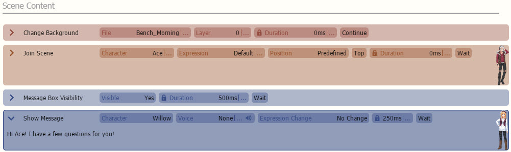
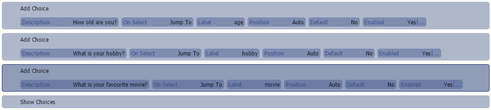
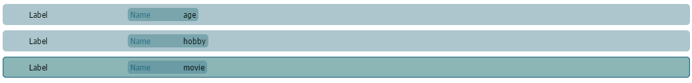
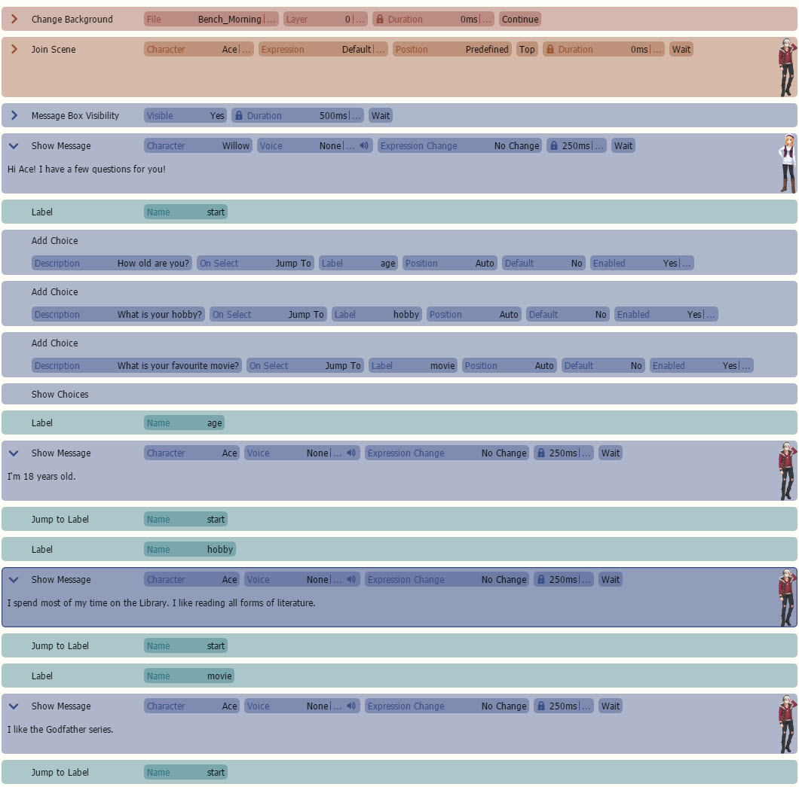
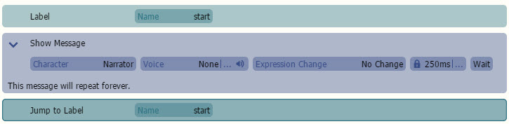

基本
 在其中插入标签名称，它们区分大小写，所以要小心。您应该得到类似这样的内容： 现在让我们插入每个问题的答案！让我们在所有“显示选项”上方添加一个名为 start 的标签，然后让我们在每个答案的末尾添加
在其中插入标签名称，它们区分大小写，所以要小心。您应该得到类似这样的内容： 现在让我们插入每个问题的答案！让我们在所有“显示选项”上方添加一个名为 start 的标签，然后让我们在每个答案的末尾添加

n this page, we will teach you how to use choices and labels in Visual Novel Maker.
标签是一个命令，允许您为场景的特定部分添加书签，并在您想要时“跳转”到它。以下是一个快速演示如何设置。正如您所见，我们在开头添加了一个名为“start”的标签。在“显示消息”之后，我们添加了一个“跳转到标签”命令，该命令返回到“start”。因此，场景会无限循环。练习 
假设您想无限期地向一个角色提出大量问题，以下是我们将如何做。
让我们从
制作你的第一个场景


在其中插入标签名称，它们区分大小写，所以要小心。您应该得到类似这样的内容： 现在让我们插入每个问题的答案！让我们在所有“显示选项”上方添加一个名为 start 的标签，然后让我们在每个答案的末尾添加

显示胸像图像